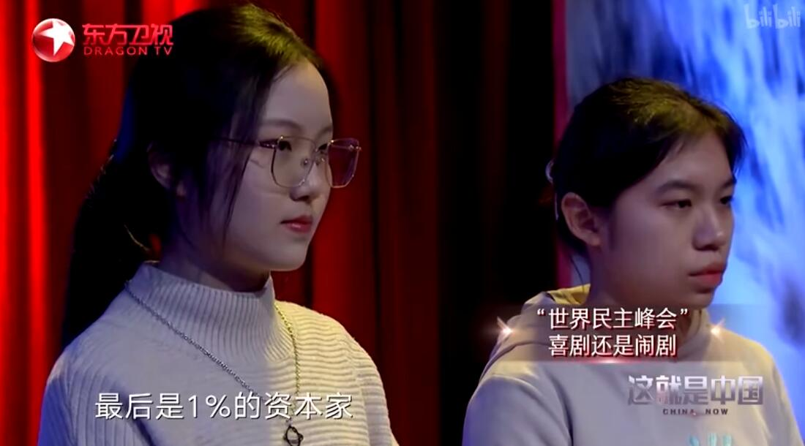

节目形式

节目制作
《这就是中国》没有把节目形式局限于纸上谈兵。相反，该节目突破了传统理论宣讲节目的单向形式，由三个“角色组合”搭配两条主线来完成节目的多角度呈现。三个组合分别指：问题提出者——中国国内最有影响力的两个时政类自媒体“观视频工作室”和“观察者网”长期积累的热衷于讨论国家发展进步的爱国青年；问题筛选者——由中国国内资深时政记者、编辑和中国模式研究专家组成的策划组；问题解决者——张维为教授。两条主线则包含真人秀和演讲两部分，每期选择一个热门话题，把“演讲+真人秀”这一创新节目模式用平行蒙太奇的电视表现手段双线交叉呈现 。
《这就是中国》创新采用“演讲+真人秀”的模式，从当下中国国内外老百姓关心的一个个热点、难点时政问题切入讨论，节目主讲人张维为以自己深刻的政治观和独到的视角，通过演讲的方式为观众答疑解惑，并在现场与年轻人们展开热烈讨论甚至辩论，最终把中国制度、中国理论、中国道路、中国文化的优势和先进性讲清楚，传达出“民族自信”的相关核心精神 。
节目特色
《这就是中国》不仅兼具思想性、理论性、针对性，还体现出很强的亲和力。节目的现场观众全部由东方卫视、观察者网面向全体网友招募，不分地域、不分职业。节目中，观众围坐在演讲者周围，形成了一个零距离的“思想广场”。演讲者不回避任何尖锐问题，不讲“刻板套话”，而观众在节目互动环节则可以和演讲者进行互动、辩论。真实而广泛的观众带来了最真实的“中国故事”，也通过节目分享了自己的生活体验和感触。